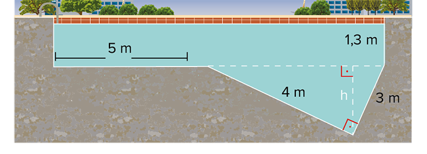
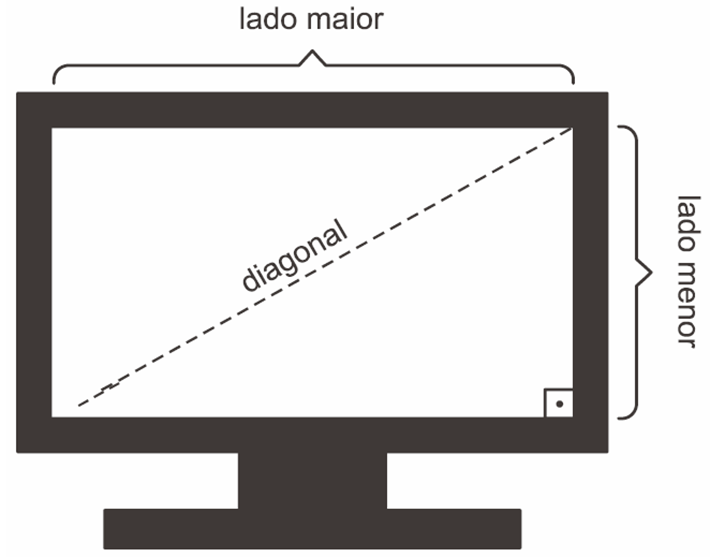
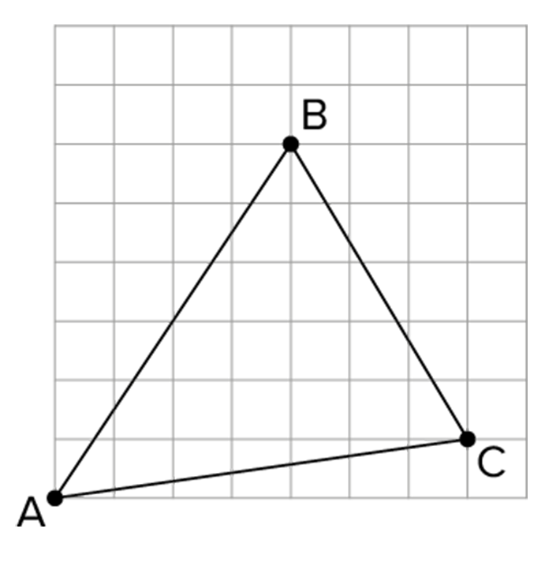
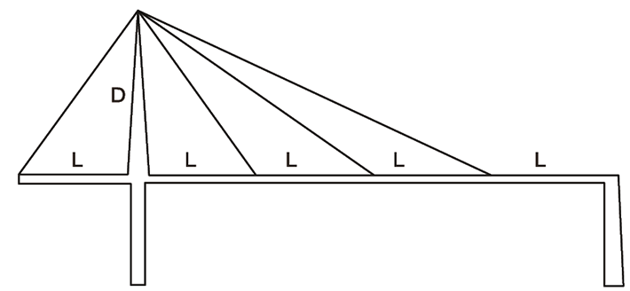
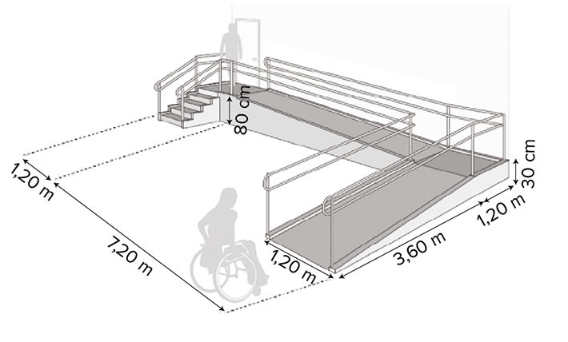
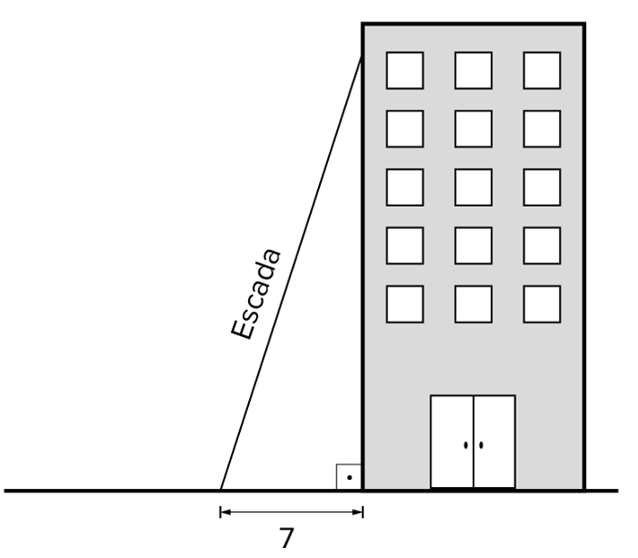

Dados a e b, números reais positivos, definimos sua média geométrica x como a solução da equação
Triângulos retângulos
Você conhece alguma demonstração do teorema de Pitágoras?
E outras relações em triângulos retângulos além dessa?
Neste capítulo será abordada a habilidade EM13MAT308 .


BC = a = medida da hipotenusa MAT_FB_U2_C5_6.png do triângulo ABC;
AC = b = medida do cateto MAT_FB_U2_C5_7.png do triângulo ABC;
AB = c = medida do cateto MAT_FB_U2_C5_8.png do triângulo ABC;
BH = m = medida da projeção do cateto MAT_FB_U2_C5_9.png sobre a hipotenusa;
CH = n = medida da projeção do cateto MAT_FB_U2_C5_10.png sobre a hipotenusa;
AH = h = medida da altura MAT_FB_U2_C5_11.png relativa à hipotenusa.


 Questão resolvida
Questão resolvida
a menor distância entre o barco e a ilha durante toda a viagem.
a distância que o barco deve percorrer a partir do ponto B até chegar ao ponto mais próximo da ilha.
Seja D o ponto do segmento MAT_FB_U2_C5_23.png mais próximo do vértice A, o ângulo MAT_FB_U2_C5_24.png medirá 90°. Desse modo:

Note que MAT_FB_U2_C5_25.png é a altura relativa à hipotenusa. Assim, pelas relações métricas no triângulo retângulo:
20 ⋅ AD = 16 ⋅ 12 ~ 20 ⋅ AD = 192 ~ AD = 9,6 km
Portanto, a menor distância entre o barco e a ilha durante toda a viagem é de 9,6 km.
Observe que MAT_FB_U2_C5_26.png , distância percorrida do ponto B ao ponto mais próximo da ilha, é a projeção do catetoMAT_FB_U2_C5_27.png sobre a hipotenusa. Assim:
20 ⋅ BD = 16² ~ 20 ⋅ BD = 256 ~ BD = 12,8 km
De modo que a distância que o barco deve percorrer a partir do ponto B para chegar ao ponto mais próximo da ilha é de 12,8 km.
Seja x a medida da menor projeção de um cateto sobre a hipotenusa desse triângulo, como ilustra a figura a seguir:

Utilizando a relação métrica que relaciona o quadrado da altura relativa à hipotenusa com as medidas das projeções dos catetos, temos:
MAT_FB_U2_C5_29.png
Da equação, temos que x = – 12, o que não convém, ou x = 7.
Assim, a medida da hipotenusa MAT_FB_U2_C5_30.png é de AB = x + 5 + x = 2x + 5 = 2 ⋅ 7 + 5 = 19 cm.

= an
c² = am
Sejam A e B os pontos em que os barbantes estão presos ao teto, C o ponto em que a lâmpada está presa ao barbante e CD a distância entre a lâmpada e o teto.
Utilizando o teorema de Pitágoras no ΔAHC e por meio da relação métrica que envolve as projeções dos catetos e a altura relativa à hipotenusa, temos:
MAT_FB_U2_C5_35.png
Por fim, aplicando Pitágoras no ΔAHB:
MAT_FB_U2_C5_36.png
 Aplicando conhecimentos
Aplicando conhecimentos

MAT_FB_U2_C5_37.png
MAT_FB_U2_C5_38.png
MAT_FB_U2_C5_39.png
MAT_FB_U2_C5_40.png
MAT_FB_U2_C5_41.png .
20
MAT_FB_U2_C5_42.png
30
MAT_FB_U2_C5_43.png
MAT_FB_U2_C5_44.png
da hipotenusa desse triângulo.
da projeção do maior cateto sobre a hipotenusa.
da projeção do menor cateto sobre a hipotenusa.
da altura relativa à hipotenusa.
24,25.
27,00.
29,25.
48,00.
52,75.
2
3
4
5
6
MAT_FB_U2_C5_48.png
MAT_FB_U2_C5_49.png
22
16
10
2
14
16
MAT_FB_U2_C5_50.png
MAT_FB_U2_C5_51.png
MAT_FB_U2_C5_52.png
MAT_FB_U2_C5_53.png
MAT_FB_U2_C5_54.png
MAT_FB_U2_C5_55.png
MAT_FB_U2_C5_56.png .
MAT_FB_U2_C5_57.png .
MAT_FB_U2_C5_58.png .
MAT_FB_U2_C5_59.png .
MAT_FB_U2_C5_60.png
MAT_FB_U2_C5_61.png
MAT_FB_U2_C5_62.png
MAT_FB_U2_C5_63.png
12 cm.
15 cm.
16 cm.
18 cm.
MAT_FB_U2_C5_64.png o segmento MAT_FB_U2_C5_65.png é perpendicular à diagonal MAT_FB_U2_C5_66.png .
MAT_FB_U2_C5_68.png
MAT_FB_U2_C5_69.png
MAT_FB_U2_C5_70.png
MAT_FB_U2_C5_71.png
MAT_FB_U2_C5_72.png
300
400
500
200
100
57
111
MAT_FB_U2_C5_73.png
MAT_FB_U2_C5_74.png
MAT_FB_U2_C5_75.png
1 780 reais.
1 785 reais.
1 790 reais.
1 795 reais.
1 805 reais.
10, 15 e 20.
12, 17 e 22.
15, 20 e 25.
16, 21 e 26.
18, 23 e 28.
MAT_FB_U2_C5_76.png cm, e a diferença entre a maior projeção de um cateto sobre a hipotenusa e a menor é de 3 cm. Determine a medida da hipotenusa desse triângulo.
MAT_FB_U2_C5_77.png
MAT_FB_U2_C5_78.png
xy = pm
x2 + y2 = p2 + m2
MAT_FB_U2_C5_79.png
MAT_FB_U2_C5_80.png medem 8 cm e 6 cm, respectivamente. Se D é um ponto sobre MAT_FB_U2_C5_81.png e o triângulo ADC é isósceles, a medida do segmento MAT_FB_U2_C5_82.png , em cm, é igual a
MAT_FB_U2_C5_83.png
MAT_FB_U2_C5_84.png
MAT_FB_U2_C5_85.png
MAT_FB_U2_C5_86.png
MAT_FB_U2_C5_87.png
MAT_FB_U2_C5_88.png . Sendo P um ponto de MAT_FB_U2_C5_89.png tal que MAT_FB_U2_C5_90.png perpendicular a MAT_FB_U2_C5_91.png , a maior medida possível de MAT_FB_U2_C5_92.png é igual a
MAT_FB_U2_C5_93.png
MAT_FB_U2_C5_94.png
MAT_FB_U2_C5_95.png
MAT_FB_U2_C5_96.png
MAT_FB_U2_C5_97.png
MAT_FB_U2_C5_98.png são retos e os segmentos AD, CD e BC medem, respectivamente, x, y e z:
Nessa situação, a altura do triângulo ADE em relação ao lado AE é dada por
MAT_FB_U2_C5_99.png
MAT_FB_U2_C5_100.png
MAT_FB_U2_C5_101.png
MAT_FB_U2_C5_102.png
= 10 cm, AB = 2 cm e DE = 8 cm.
MAT_FB_U2_C5_103.png
MAT_FB_U2_C5_104.png
MAT_FB_U2_C5_105.png
MAT_FB_U2_C5_106.png
MAT_FB_U2_C5_107.png são perpendiculares a MAT_FB_U2_C5_108.png , respectivamente. Se AB = 40 cm, determine a medida de MAT_FB_U2_C5_109.png .
Seção olímpica
MAT_FB_U2_C5_113.png respectivamente, de maneira que MAT_FB_U2_C5_114.png e DF = AB. Do mesmo modo, traça-se MAT_FB_U2_C5_115.png perpendicular a MAT_FB_U2_C5_116.png , G pertencendo ao segmento MAT_FB_U2_C5_117.png , de modo que EG ⋅ DF = 18. Determine a medida BF.
4 m
8 m
9 m
13 m
15 m
No edifício de fachada chanfrada, foi retirado um prisma vertical, cuja base é um triângulo retângulo.
franckreporter/iStockphoto.com
Ângulos retos são tão frequentes em nosso dia a dia que, muitas vezes, nem atentamos a eles. Olhe ao seu redor: a capa do livro, os cantos da sala, os edifícios nas ruas, as quinas das mesas e a lousa são alguns exemplos de superfícies que apresentam ângulos de 90° facilmente identificáveis.
Neste capítulo, trataremos do triângulo retângulo, o mais simples polígono que apresenta um ângulo de 90°. Muito além do famoso teorema de Pitágoras, aprenderemos outras relações que não envolvem apenas as medidas dos catetos e da hipotenusa de um triângulo retângulo, mas também outros elementos, como as projeções dos catetos e a altura relativa à hipotenusa. Para isso, utilizaremos a semelhança de triângulos, vista anteriormente.
Projeção
Antes de explorar as relações métricas em um triângulo retângulo, é necessário conhecer o conceito de projeção ortogonal de um segmento sobre uma reta, que, de modo geral, é o pé da perpendicular, traçado do ponto à reta. Por exemplo, na figura a seguir, o ponto P' é a projeção do ponto P sobre a reta r.
Já a de um segmento sobre uma reta é a projeção de todos os pontos constituintes dele. Na situação a seguir, o segmento
Outros tipos de projeção também são possíveis. Por exemplo, você pode pensar em sua sombra como a projeção do seu corpo no chão, já que os raios de luz solar são praticamente paralelos entre si, devido à grande distância entre o Sol e a Terra.
A sombra de uma pessoa é uma projeção de seu corpo sobre o solo.
Zenza Flarini/Shutterstock.com
De posse desse novo conceito, seguiremos os nossos estudos sobre triângulos retângulos.
Elementos de um triângulo retângulo
Seja dado um triângulo ABC, retângulo no vértice A. Nesse triângulo, traçamos o segmento de reta
Pela figura, podemos destacar os seguintes elementos:
Note que, nessa situação, há três triângulos retângulos. São eles: ΔABC, ΔAHB e ΔAHC. Passaremos a considerar as relações entre as medidas dos lados desses três triângulos. Para isso, recorreremos às relações de semelhança de triângulos, estudadas no capítulo anterior.
Relações métricas no triângulo retângulo
Considere o triângulo ABC, retângulo em A. Ao traçarmos a altura
Perceba que os ângulos
Logo, analisando separadamente os triângulos, temos a seguinte situação:
Visto que todos os três triângulos possuem ângulos congruentes entre si, temos:
ΔABC ∼ ΔHBA ∼ ΔHACDessa semelhança, podemos tirar uma grande variedade de relações, que serão explanadas a seguir.
Relação 1
O produto das medidas dos catetos é igual ao produto da medida da hipotenusa pela altura relativa a ela.
ΔABC ∼ ΔHBA:
Relação 2
O quadrado da medida de um cateto é igual ao produto entre a medida da sua projeção na hipotenusa e a própria hipotenusa.
ΔABC ∼ ΔHAC:
ΔABC ∼ ΔHBA:
Relação 3
O quadrado da medida da altura relativa à hipotenusa é igual ao produto entre as medidas das projeções dos catetos sobre a hipotenusa.
ΔHBA ∼ ΔHAC:
Relação 4
O produto da medida de um cateto pela altura relativa à hipotenusa é igual ao produto entre a medida do outro cateto pela projeção do primeiro sobre a hipotenusa.
ΔABC ∼ ΔHAC:
ΔABC ∼ ΔHBA:
1 Um barco, inicialmente posicionado no ponto B do oceano, deseja fazer uma viagem até o ponto C, a20 km de distância. O capitão do navio sabe que no ponto A, a 16 km da posição inicial, existe uma ilha e que o ângulo BÂC mede 90°. Com base nessas informações e sabendo que o barco seguirá em linha reta pela trajetória
Resolução:
2 As projeções dos catetos de um triângulo retângulo sobre a sua hipotenusa diferem em 5 cm, enquanto a altura relativa à hipotenusa mede
Resolução:
Teorema de Pitágoras
Anteriormente, estudamos o teorema de Pitágoras, a relação métrica mais importante em um triângulo retângulo. No entanto, a prova desse teorema será abordada neste capítulo.
Considere um triângulo retângulo ABC, de hipotenusa
Das relações demonstradas anteriormente, temos que:
b²Adicionando essas duas equações: b²
Note que podemos colocar o termo a em evidência, no lado direito da equação: b²
Como m
Logo, temos o resultado desejado: a²
Portanto, obtemos a última e mais importante relação em um triângulo retângulo:
A soma dos quadrados dos catetos é igual ao quadrado da hipotenusa.Há inúmeras outras provas para o teorema de Pitágoras, e, no capítulo relacionado às áreas das figuras planas, veremos mais uma.
3 Uma lâmpada está presa ao teto por dois barbantes, perpendiculares entre si, como mostra a figura. Determine a distância da lâmpada ao teto, sabendo que os barbantes medem 9 cm e 12 cm.
Resolução:
4 Dada a situação representada na figura a seguir, determine os valores das medidas indicadas por x, y e z.
Resolução:
1
Considerando a figura a seguir, determine qual das seguintes proporções é falsa:
2
Uma criança, cujo nível dos olhos está a 1 metro do chão, consegue visualizar completamente uma árvore sob um ângulo de visão de exatos 90°. Determine a altura da árvore sabendo que a criança está a 2 metros de distância dela. Utilize a aproximação3
IFPE 2014 Uma formiguinha encontra-se no ponto A de um cubo com 10 cm de aresta, conforme a figura a seguir. Ela tem a capacidade de se deslocar em qualquer região da superfície externa do cubo e deseja chegar ao ponto B. Para isso ela deverá percorrer a diagonal da face superior desse cubo, atingir o ponto C e, por fim, caminhar sobre a aresta até chegar a B.4
Os catetos de um triângulo retângulo medem 7 cm e 24 cm. Com base nessas informações, determine a medida:1
Dada a figura a seguir, determine a medida x indicada.2
Determine pelo menos seis relações métricas para os elementos indicados na figura a seguir.3
A altura relativa à hipotenusa de um triângulo retângulo mede 12 cm, e uma das projeções dos catetos sobre a hipotenusa, 16 cm. Assim, determine a medida dos catetos desse triângulo.4
A figura a seguir ilustra a piscina de um clube. A partir das informações apresentadas, determine:
o comprimento total da piscina. a profundidade máxima da piscina.5
Duas crianças, afastadas 50 metros uma da outra, observam a mesma pipa pairando no ar. Sabe-se que a distância da primeira criança em relação à pipa é de 30 metros e, da segunda, 40 metros. Considerando desprezível a altura das crianças, determine a altura a que a pipa está do solo no momento dessa observação.6
Um enfeite natalino é suspenso no ponto C por um barbante, preso pelos pontos A e B ao teto de uma casa, conforme a ilustração.Sabendo que a distância do enfeite ao teto é de 12 cm e que a distância entre A e B é de 25 cm, determine o comprimento total do barbante.
Consolidando saberes
1
IFSP Com uma trena e um esquadro em mãos, uma pessoa, em A, pode determinar a distância em que se encontra da base de uma árvore do outro lado do rio. Para tanto, fixa e estica um barbante de 39 m, de A até um ponto C qualquer, de modo que a linha visada AP seja perpendicular à linha AC, onde marca um ponto B a 3 m de C. Em seguida, a partir de C, ela caminha perpendicularmente à linha AC, afastando-se do rio e, quando vê B alinhado com a árvore, marca o ponto D. Constata, então, que a linha CD tem 4 m. Assim, a distância d indicada na figura, em metros, é igual a:2
UEL-PR 2019 Convenciona-se que o tamanho dos televisores, de tela plana e retangular, é medido pelo comprimento da diagonal da tela, expresso em polegadas. Define-se a proporção dessa tela como sendo o quociente do lado menor pelo lado maior, também em polegadas. Essas informações estão dispostas na figura a seguir. Suponha que Eurico e Hermengarda tenham televisores como dado na figura e de proporção
3
EEAR-SP 2019 Se ABC é um triângulo retângulo em A, o valor de n é4
Determine as medidas das incógnitas indicadas em cada uma das situações a seguir.5
Determine as medidas de todas as incógnitas representadas na figura.6
Calcule a medida da altura x relativa à hipotenusa do triângulo retângulo indicado.7
Determine as medidas das incógnitas representadas a seguir.8
Uerj 2018 Segundo historiadores da matemática, a análise de padrões como os ilustrados a seguir possibilitou a descoberta das triplas pitagóricas.Observe que os números inteiros 3², 4² e 5², representados respectivamente pelas 2a, 3a e 4a figuras, satisfazem ao Teorema de Pitágoras. Dessa forma (3, 4, 5) é uma tripla pitagórica.
Os quadrados representados pelas 4a, 11a e na figuras determinam outra tripla pitagórica, sendo o valor de n igual a:
9
Calcule o valor das variáveis m, n e h indicadas.10
IFCE 2016 Um triângulo retângulo tem catetos medindo 1 e 2. Se um quadrado for construído tendo como lado a hipotenusa desse triângulo, a diagonal do quadrado medirá
11
Cefet-MG 2015 Na figura, os triângulos ABC e BDE são triângulos retângulos, ondeDesenhando o triângulo ACD, a medida do segmento CD é igual a
12
Uern 2015 Matheus marcou, em uma folha quadriculada de 1 × 1 cm, três pontos e ligou-os formando o seguinte triângulo: É correto afirmar que o produto dos lados do triângulo é
13
Unicamp Em um aparelho experimental, um feixe laser emitido no ponto P reflete internamente três vezes e chega ao ponto Q, percorrendo o trajeto PFGHQ. Na figura a seguir, considere que o compri-mento do segmento PB é de 6 cm, o do lado AB é de 3 cm, o polígono ABPQ é um retângulo e os ângulos de incidência e reflexão são congruentes, como se indica em cada ponto da reflexão interna. Qual é a distância total percorrida pelo feixe luminoso no trajeto PFGHQ?14
UEPB No retângulo ABCD de ladosO segmento
15
IFSC 2015 Para acessar o topo de uma plataforma de saltos a 400 cm de altura, um atleta deve subir uma escadaria que possui 8 degraus no primeiro lance e 6 degraus no segundo lance de escada, conforme mostra a figura a seguir.Sabendo que cada degrau possui 30 cm de profundidade, é CORRETO afirmar que o comprimento, em cm, da haste metálica AB utilizada para dar sustentação à plataforma é:
1
UFPA Uma passarela construída em uma BR no Pará tem um vão livre de comprimento 4L. A sustentação da passarela é feita a partir de 3 cabos de aço presos em uma coluna à esquerda a uma altura D da passarela. Esta coluna por sua vez é presa por um cabo de aço preso a um ponto na mesma altura da passarela, e a uma distância L da passarela, conforme representa a figura a seguir. Supondo L
2
CMRJ 2017 A figura a seguir mostra uma rampa de acesso que foi construída adjacente a uma escada existente em uma das entradas de um prédio em uma escola. A rampa foi construída dentro das normas que regulam a inclinação de rampas para pessoas com necessidades especiais (cadeirantes e pessoas com mobilidade limitad. Modificada: http://ew7.com.br/projeto-arquitetonico-com-autocad/images/stories/rampas7.png
Para que a rampa fique dentro das normas, são necessários mais alguns ajustes, como, por exemplo, a sinalização com piso tátil para deficientes visuais, em toda a sua extensão até a frente da porta. O custo do piso tátil instalado, de 1,20 m de largura, é 150 reais por metro.
Para sinalizar a rampa, a escola gastará aproximadamente
1
IFCE A altura, baixada sobre a hipotenusa de um triângulo retângulo, mede 12 cm, e as projeções dos catetos sobre a hipotenusa diferem de 7 cm. Os lados do triângulo são, em centímetros, iguais a2
Em um triângulo retângulo, as projeções dos catetos sobre a hipotenusa medem 18 cm e 6 cm. Determine a altura relativa à hipotenusa.3
A altura relativa à hipotenusa de um triângulo retângulo mede4
Fuvest Na figura, os ângulos assinalados são retos. Temos necessariamente:1
ITA Seja ABC um triângulo retângulo cujos catetos2
FGV No triângulo retângulo ABC, retângulo em C, tem-se que3
UFMG Nesta figura, os ângulos4
Unifei-MG Calcule a distância entre os pontos A e E da figura a seguir, onde BD5
UFMG Nesta figura, o quadrado ABCD está inscrito no triângulo AMN, cujos lados AM e NA medem, respectivamente, m e n: Então, o lado do quadrado mede:1
A figura indica um triângulo equilátero ABC, em que1
Em um retângulo ABCD, marcam-se os pontos E e F em2
OBMEP O topo de uma escada de 25 m de comprimento está encostado na parede vertical de um edifício. O pé da escada está a 7 m de distância da base do edifício, como na figura. Se o topo da escada escorregar 4 m para baixo ao longo da parede, qual será o deslocamento do pé da escada? 